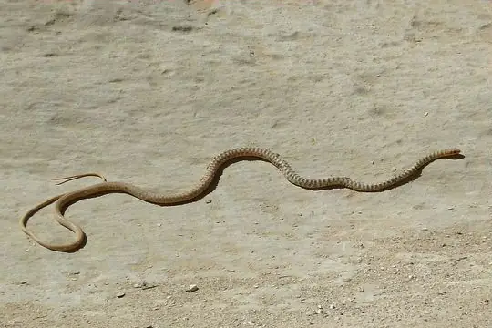
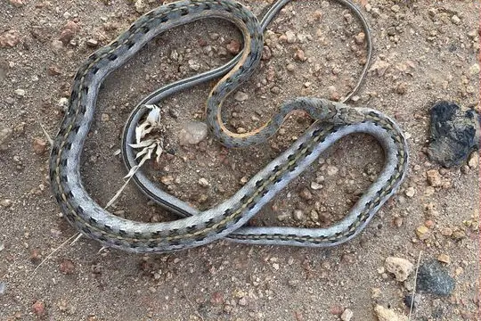

Snakes of Libya
18 living snake species are recorded in Libya in SnakeList: 8 venomous and 10 non-venomous, from 7 families.
- 18living species
- 7families
Danger to people · tap a number to show only those snakes
- 0giant constrictors
Harmful = dangerously venomous + giant constrictors. Harmless = not venomous and not a giant constrictor. Mildly venomous snakes have no serious bites to people documented. Any snake can bite.
These totals count the unique living snake species SnakeList records in Libya. A species counts if it is recorded anywhere in the country, so not every snake lives in every part of it.
In SnakeList’s checklist filters
How many of the 18 living species here each filter in the SnakeList app picks out – tap a number to show only those snakes.
Snake family5 types, 7 families
Type
Family
Habitats16 habitat groups
Habitats are estimated from where each snake is recorded and what kind of snake it is, as in SnakeList; a snake can count in several.
Characteristics8 venomous, 1 constrictors
Constrictor and Non-constrictor count only snakes whose family or genus is documented as constricting or not; the rest are not documented.
Other filters1 popular, 2 rare
- 0extinct
Species
Showing 18 species
 Algerian Whip SnakeHemorrhois algirus
Algerian Whip SnakeHemorrhois algirus Awl-headed SnakeLytorhynchus diadema
Awl-headed SnakeLytorhynchus diadema Brahminy BlindsnakeIndotyphlops braminus
Brahminy BlindsnakeIndotyphlops braminus Desert Horned ViperCerastes cerastes
Desert Horned ViperCerastes cerastes- No photo yetDesert ViperDaboia deserti
 Egyptian CobraNaja haje
Egyptian CobraNaja haje Egyptian Saw-scaled ViperEchis pyramidum
Egyptian Saw-scaled ViperEchis pyramidum False Smooth Snake (cucullatus)Macroprotodon cucullatus
False Smooth Snake (cucullatus)Macroprotodon cucullatus- No photo yetLanza's Worm SnakeMyriopholis lanzai
 Moila SnakeMalpolon moilensis
Moila SnakeMalpolon moilensis North African CatsnakeTelescopus tripolitanus
North African CatsnakeTelescopus tripolitanus Rogers' RacerPlatyceps rogersi
Rogers' RacerPlatyceps rogersi
Sahara RacerPlatyceps saharicus Sahara Sand ViperCerastes vipera
Sahara Sand ViperCerastes vipera Saharan Sand SnakePsammophis aegyptius
Saharan Sand SnakePsammophis aegyptius Sand Boa (jaculus)Eryx jaculus
Sand Boa (jaculus)Eryx jaculus
Tanganyika Sand SnakePsammophis tanganicus Viperine SnakeNatrix maura
Viperine SnakeNatrix maura
No snakes in Libya match.
Libya’s snakes in numbers
- Families: Colubridae 7, Viperidae 4, Psammophiidae 3, Boidae 1, Elapidae 1, Leptotyphlopidae 1, Typhlopidae 1.